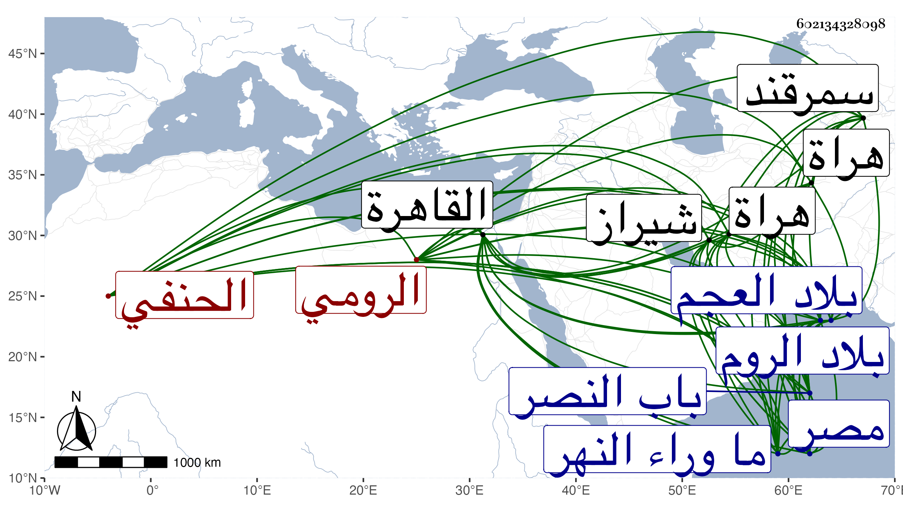

0902Sakhawi.DawLamic.ITO20230111-ara1.EIS1600.602134328098
Biography ID: 602134328098
118
علي بن موسى بن إبراهيم العلاء أبو الحسن بن مصلح الدين الرومي الحنفي نزيل القاهرة . ولد سنة ست وخمسين وسبعمائة واشتغل ببلده وتفنن في العلوم ودخل بلاد العجم وأدرك كما قال العيني الكبار بسمرقند وشيراز وهراة وغيرها ولازم السيد الجرجاني مدة زاد غيره والسعد التفتازاني وقدم الديار المصرية في سنة سبع وعشرين فأكرم ونالته الحرمة الوافرة من الأشرف برسباي واستقر به في مشيخة مدرسته التي أنشأها وتدريسها فباشرها مدة ثم صرفه لكونه وضع يده على مال جزيل لبعض من مات من صوفيتها ولأمور فاحشة نقلت له عنه وأمر بإخراجه وقرر فيها شيخنا ابن الهمام وذلك في ربيع الآخر سنة تسع وعشرين وتوجه هذا فحج وسافر من هناك إلى الروم ثم عاد إلى مصر في سنة أربع وثلاثين فكانت حوادث ستأتي الإشارة إليها ، ذكره شيخنا في معجمه وقال : أنشدني من لفظه في قصة اتفقت له قال : أنشدني الشيخ شهاب الدين نعمان الحنفي العالم المشهور بما وراء النهر وهو والد القاضي عبد الجبار :
| إذا اعتذر الفقير إليك يوما | تجاوز عن معاصيه الكثيره |
| فإن الشافعي روى حديثا | بأسناد صحيح عن مغيره |
| بأن قال النبي يقيل ربي | بعذر واحد ألفى كبيره |
قال : وحضر مجلس الحديث بالقلعة في رمضان سنة أربع وثلاثين فوقعت منه فلتات لسان حمله عليها بعض الناس فيما زعم ثم اعتذر عن ذلك ورام من السلطان أمرا فلم يصل إليه فتوجه في آخرها إلى بلاد الروم في البحر ثم عاد في أثناء سنة تسع وثلاثين وحضر جلس أيضا وجرى على سننه المعروف في حدة الخلق والشراسة وغير ذلك مما يشاهده الحاضرون وليس بمدفوع عن العلم والاستعداد ولكنه يحب الشهرة ورام الاستقرار في مشيخة الشيخونية فلم يتهيأ له فلما كان سنة أربعين جرى الكلام في المجلس فحط على شيخها يعني الشرف أبا بكر بن إسحاق الملطي باكيرا بمجلس السلطان وكفره فجر ذلك إلى إحضاره لمجلس الشرع وادعى عليه فأنكر وزعم أن الأعوان أهانوه ثم عقد له مجلس بحضرة السلطان فأصلحوا بينهما وضعف بعد ذلك وانقطع مدة إلى أن شارف العافية وأراد دخول الحمام فسقط من سريره فانفك وركه فانقطع مدة أخرى إلى أن مات والله يعفو عنه في سنة إحدى وأربعين يعني في ليلة أحد العشرين من رمضان ، وتقدم للصلاة عليه الحنفي وشق ذلك على الشافعي يعني العلم البلقيني ، زاد غيره ودفن بمقبرة باب النصر ، وكان متضلعا من العلوم ممن حضر في ابتداء مناظرات التفتازاني والسيد بحضرة تيمور وغيره فحفظ تلك الأسئلة والأجوبة الفخمة وأتقنها غير أنه كان مبغضا للناس لطيشه وحدة مزاجه وجرأته واستخفافه بمن يبحث معه وما وقع منه في حق شيخنا معروف ، وتصدى في القدمة الثانية للإشغال وانضم إليه الطلبة فلم تطل أيامه ، وكذا قال العيني : كان عالما محققا بحاثا دينا ، وقال المقريزي في عقوده وغيرها : كان فاضلا في عدة علوم مع طيش وخفة وجرأة بلسانه على ما لا يليق وفحش في مخاطبته عند البحث معه عفا الله عنه .
